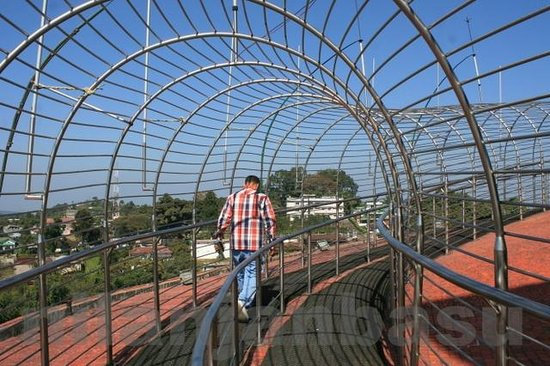

Don Bosco Center

The Don Bosco Training Center is a vocational institution in Comoro on the outskirts of Dili, East Timor. It is a privately managed by the Salesians of Don Bosco.
The institution has short courses in carpentry, electricity and welding. for students aged 17–35.[1]
When a dispute between the government and a group of 600 sacked soldiers erupted into violence on 28 April 2006, thousands of people immediately began fleeing their homes for the safety of the building of the institution.[2]

HOW TO REACH ?
Nearest Airport: Shilong
Nearest Railway Station:Shilong
Nearest Bus Stand:Shilong